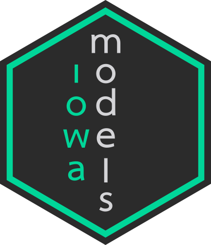

Utility functions
Corson N. Areshenkoff
2024-08-06
utility_functions.Rmdiowa implements multiple common utility functions, and can be relatively easily extended to include more. Currently, The following are included in the base package:
Expectance valence utility
- Keyword:
EU - Parameters:
w(Win/loss weighting) - Bounds:
- Depends: Gain and loss